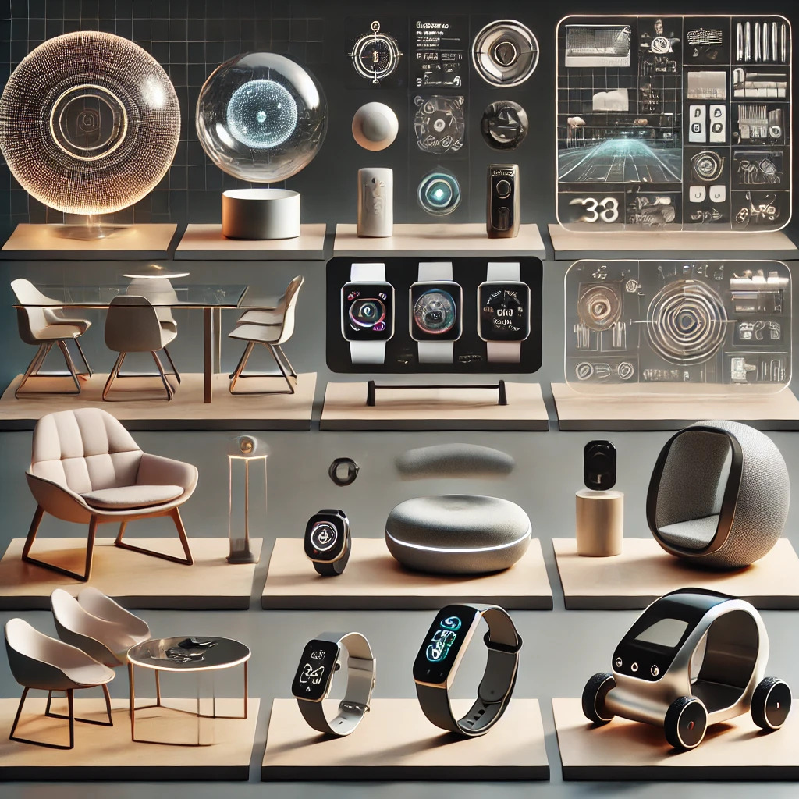

AI-Generated Design Concept
This page showcases an AI-generated design concept that represents the intersection of technology and creativity. The image below was created using advanced AI algorithms to visualize innovative product design possibilities.

AI-generated visualization of a futuristic product design concept
How This Was Created
This image was generated using state-of-the-art AI models that have been trained on millions of design examples. The AI synthesizes these learnings to create unique, innovative design concepts that can inspire human designers and accelerate the product development process.